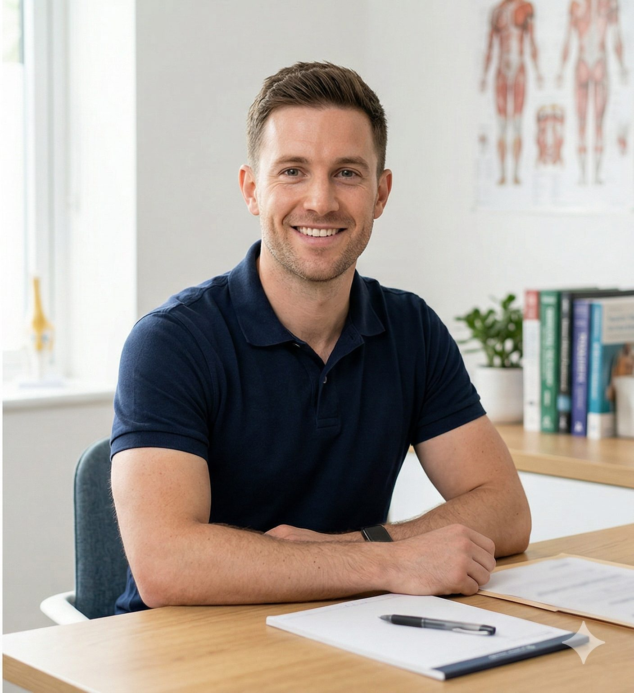

Hello, I'm Tom
I'm a registered osteopath based in Leeds city centre, and I've spent the last decade helping people get out of pain and stay out of pain. From office workers with chronic neck problems to weekend runners with knee injuries, I treat the full range of musculoskeletal conditions using skilled, hands-on techniques.
I graduated from the British School of Osteopathy (now the University College of Osteopathy) with a Master's in Osteopathy, and I've been in clinical practice ever since. I'm registered with the General Osteopathic Council, fully insured, and committed to ongoing professional development.
Outside of clinic, I'm a keen road cyclist, a mediocre but enthusiastic home cook, and I spend most weekends exploring the Yorkshire Dales with my border collie, Finn.
From Sport to Clinical Practice
Growing up around sport gave me a deep respect for what the human body can do — and a front-row seat to what happens when it breaks down.
I played competitive cricket through my teens and suffered a recurring lower back injury that nobody could properly explain. After seeing an osteopath who not only fixed the problem but also helped me understand why it kept coming back, I knew this was what I wanted to do with my life.
I trained for four years at the British School of Osteopathy in London, qualifying with a Master's degree in 2014. After working in multidisciplinary clinics in London and Sheffield, I moved back to Leeds — the city I grew up near — and opened my own practice. Ten years and thousands of patients later, I still get the same satisfaction from helping someone walk out feeling better than when they walked in.
Qualifications & Registration
Your safety matters. Here's what stands behind my practice.
GOsC Registered
General Osteopathic Council — the statutory regulator for osteopaths in the UK. It's a legal requirement to practise.
MOst (Master's)
Master of Osteopathy from the University College of Osteopathy — four years of full-time clinical training.
Institute of Osteopathy
Member of the iO — the UK's leading professional membership body for osteopaths, promoting standards and development.
Fully Insured
Full professional indemnity and public liability insurance — your safety and trust are always protected.
DBS Enhanced
Enhanced DBS check completed — an additional layer of safeguarding for all patients.
Ongoing CPD
Regular training in sports rehabilitation, dry needling, and cranial osteopathy. Continuous learning keeps my practice current.
How I Work
Every patient is different. These principles guide every consultation.
Find the Cause
Pain is often a symptom, not the problem. I take time to assess your whole body — posture, movement, lifestyle — to understand what's really going on. Treating the cause means the results last.
Hands-On Treatment
I use a combination of soft tissue massage, joint mobilisation, manipulation, and stretching — tailored to your body and your condition. No two treatments are the same because no two patients are the same.
Educate & Empower
I'll explain what's happening in plain English, give you exercises to do at home, and help you understand how to prevent the problem coming back. My goal is to make you self-sufficient, not dependent.
Honest & Efficient
I'll tell you how many sessions I think you'll need and whether osteopathy is the right approach. If it's not, I'll refer you to someone who can help. I'm not interested in booking unnecessary appointments.